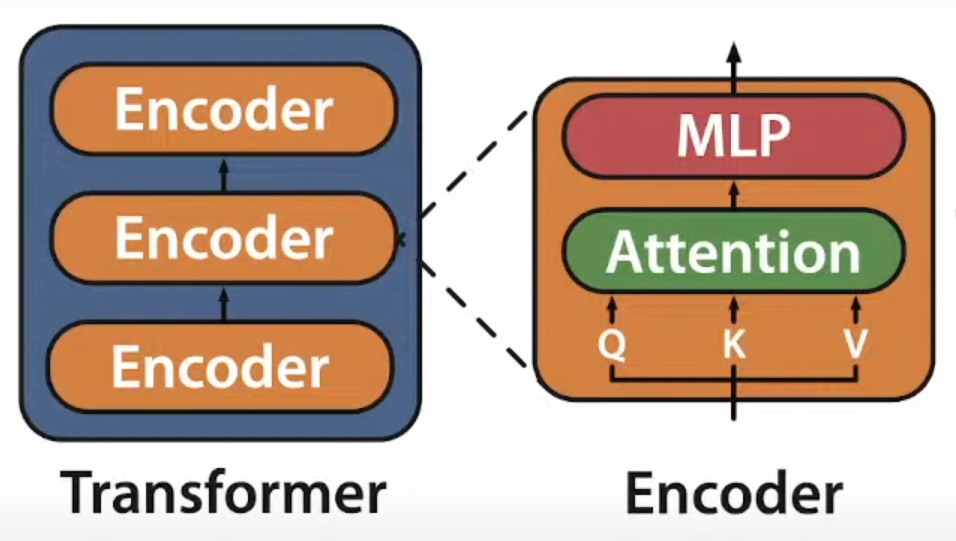
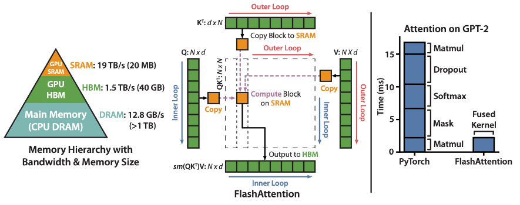
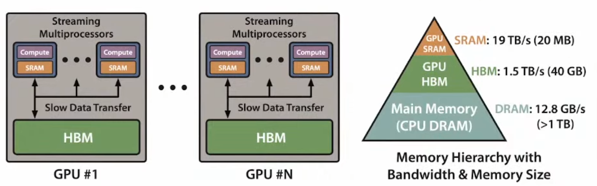
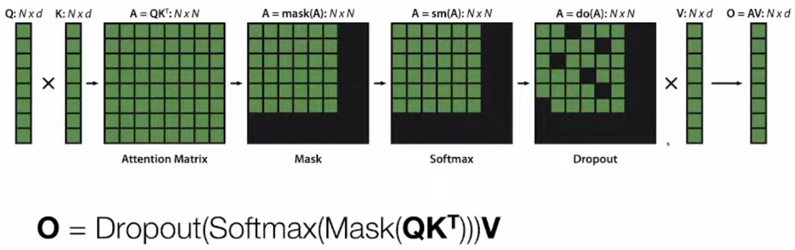
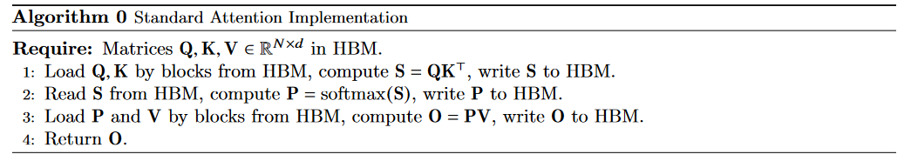
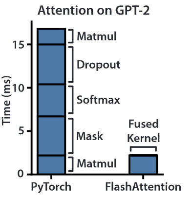
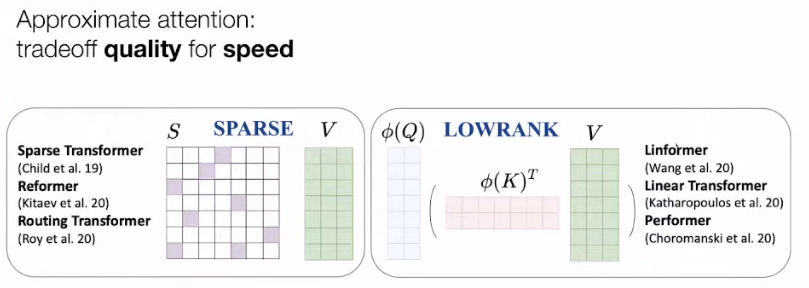
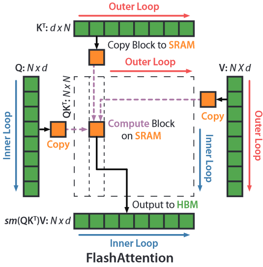
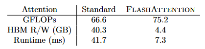
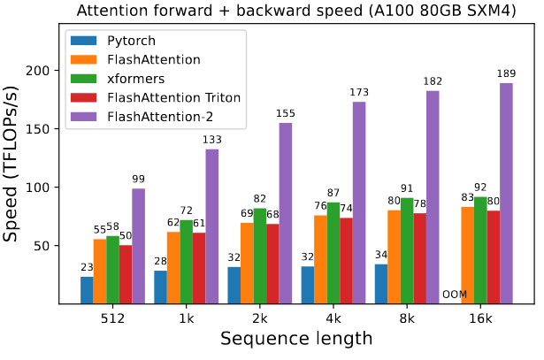

FlashAttention
Flash Attention¶
FlashAttention: Fast and Memory-Efficient Exact Attention with IO-Awareness
1. Introduction¶
1.1 Motivation: Modeling Longer Sqquences¶
动机很简单，就是想要等接受比较长的序列作为泛Transformed架构的输入：
-
NLP中：接收到更长的文本，可以理解书，戏剧...
-
CV中：可以接受更高分辨率的图像（ViT），更好的理解图像
-
时间序列，音频，视频：都是非常长的序列
Challenge: How to scale Transformers to longer sequences?
Transformer的部分结构，这里以Encoder为例：

-
Attention在sequence变长时，计算的拓展性并不好
-
MLP 在sequence变长时，计算的拓展性还不错
所以主要关注对Attention的优化
Example
这里剧透一下用了Flash Attention之后的效果：
1.2 Method Summary¶
Tiling & recomputation: 可以有效降低 GPU memory IO
一张图省流概括： 
1.3 Background¶
GPU的存储层次：¶
A100 GPU 为例：

-
有 40-80GB 高带宽内存 (HBM)，带宽为 1.5-2.0TB/s
-
108 个流式多处理器（SMP）中的每个都有 192KB on-chip SRAM，带宽约为 19TB/s(似乎就是CUDA编程抽象中的shared memory)
Performance characteristics¶
GPU 有大量的线程来执行opertaion（也被成为 kernel）。每个kernel 将input从HBM load到寄存器和 SRAM，进行计算，然后将output写入 HBM。
根据计算和内存访问的平衡，operations 可分为compute-bound和memory-bound操作。这通常用arithmetic intensity来衡量，即 number of arithmetic operations per byte of memory access
-
Compute-bound：operations持续时间取决于运算次数的多少，而访问 HBM 的时间要短得多。典型的例子是matrix multiply with large inner dimension, convolution with large number of channels.
-
Memory-bound: operations持续时间取决于内存访问次数，而计算耗时要少得多。这方面的例子包括大多数其他操作：elementwise（如activation、dropout）和reduction（如sum、softmax、batch norm、layer norm）。
Kernel fusion¶
加速Memory-bound operation 的最常见方法是 Kernel fusion：如果相同的input会连续经历多个operation，可以从 HBM 一次load输入，而不是为每个operation结束都将结果写入 HBM, 下个operation开始再load。编译器可以自动进行 Kernel fusion
但是，在模型训练的情况下，中间值仍然需要写入 HBM 以供backward计算梯度时使用，导致Kernel fusion效果变差（每次必须store了）。
Attention 的计算与瓶颈¶
Important
Attention is bottlenecked by memory bandwidth

上图中的N表示sequence length，一般2K，4K等，d表示Transformer中的每个head的输出维度, d = d_model / #head；一般d << N，以GPT-2为例，N = 1024, d = 768/12 = 64
可以观察到，其实Q,K,V,O的大小都不算太大（N * d），但是四个中间结果都是\(N^2\)的大小，所以序列长度N一大，就会有问题—。
最朴素的实现方式需要重复地对 GPU HBM 进行读写，读写HBM成为主要瓶颈：

从下图中可以看到，matmul部分(Compute-bound)其实占用的时间并不多，Dropout, softmax, Mask等(Memory-bound)操作占用了大部分时间：

Approximate Attention¶
之前也有一些工作，为了加快计算速度，不做全量的计算，而是做近似计算，但都没有被大规模采用，毕竟大家还是比较关注于精度的。

2. Method¶
其实就是最基本的tiling的思路，但是会有一些挑战：
-
计算softmax的时候，需要一整行一起计算
-
反向传播的时候，需要比较大的中间结果
解决方法：
-
改进tiling的方式，减少SRAM和HBM之间的数据传输
-
使用经典的Recomputation的方式，不存储中间结果，反向传播需要的时候再冲算一遍
Quesiton
实现方式：fused CUDA kernel for fine-grained control pf memory accesses
还不懂是啥
Tiling¶
一个将softmax拆开计算的想法：
\(\operatorname{softmax}\left(\left[A_1, A_2\right]\right)=\left[\alpha \operatorname{softmax}\left(A_1\right), \beta \operatorname{softmax}\left(A_2\right)\right]\)
\(\operatorname{softmax}\left(\left[A_1, A_2\right]\right)\left[\begin{array}{l}V_1 \\ V_2\end{array}\right]=\alpha \operatorname{softmax}\left(A_1\right) V_1+\beta \operatorname{softmax}\left(A_2\right) V_2\)
所以\(\alpha\), \(\beta\)分别是什么？
这样的话，一个Block的计算流程都可以在SRAM中完成，只需最后再进行一个缩放即可：

更便于理解的动态演示
Recomputation¶
其实也是借鉴了gradient checkpointing的想法，不过不同的是:
-
gradient checkpoint 常被认为是在maximum amount of memory required 和 speed 之间的trade off
-
在计算能力足够的情况下，通过更大的FLOPs(floating point operations per second)，recomputation甚至比从HBM中读取更快；比如看下表，多做些计算，少些对HBM的读写，总的Runtime会更短

FlashAttention-2¶
FlashAttention-2: Faster Attention with Better Parallelism and Work Partitioning
这篇论文补充了许多FlashAttention的细节，主要是在并行性上做了一些优化，使得计算速度更快。
1. Introduction¶
Key Insights:
-
减少 non-matmul FLOPs：GPU对matmul的计算有很好的并行性，但是对于其他的操作，比如softmax，mask，dropout等，就不是那么好了，所以可以考虑减少这些操作的计算量
-
在 seqlen这个维度上做并行，从而提高 occupancy；之前仅仅是在batch size, head层面上做，但实际上batch size， head的数量都不是很大，仅仅在这些维度上做并行，还有部分的GPU core是空闲的。在 warps(32 threads) 的层面上做更好的 work partitioning 。
效果： 效果使得attention 的计算速度更接近于 pure Matrix Multiplication。

2. Method¶
创建日期: 2023-08-13